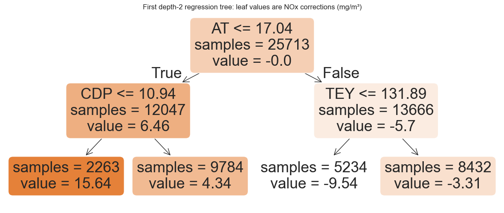
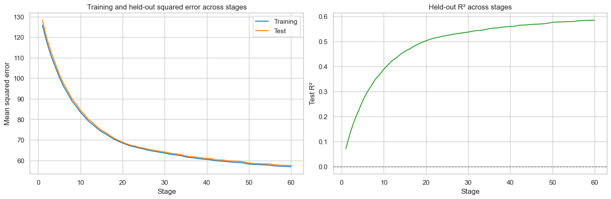

from pathlib import Path
import matplotlib.pyplot as plt
import numpy as np
import pandas as pd
import seaborn as sns
from sklearn.ensemble import GradientBoostingRegressor
from sklearn.metrics import mean_squared_error, r2_score
from sklearn.model_selection import train_test_split
from sklearn.tree import DecisionTreeRegressor, plot_tree
sns.set_theme(style="whitegrid", context="notebook")Gradient boosting: correct the current model

Gradient boosting builds an ensemble sequentially, just as AdaBoost does. But its mechanism is different. To make the idea direct, we use a regression problem: predict continuous NOx concentration from gas-turbine operating measurements.
The model starts with one constant prediction. Each new shallow regression tree then learns a continuous correction to the current prediction.
What you will do
- Build a high-level mental model of boosting as sequential error correction.
- Contrast gradient boosting with bagging and AdaBoost.
- Set up one NOx regression task with a fixed train/test split.
- Connect residual correction to the word gradient (optional).
- Fit small regression trees that supply continuous corrections.
- Add the corrections gradually, then evaluate the growing model on the same held-out observations.
The high-level idea: repair a running forecast
Gradient boosting builds one prediction through a sequence of small revisions. It does not ask every tree to predict NOx from scratch. Instead, each new tree asks: where is the current model still systematically too high or too low?
During training, we repeat this repair loop:
- Start from the current prediction for every training observation.
- Compare it with the measured NOx and calculate the remaining error.
- Fit a small regression tree to recognize operating regions with similar remaining errors.
- Add only part of that tree’s correction to the current prediction.
- Repeat, so the next tree focuses only on what remains unexplained.
Thus, the final model is an additive model:
\[ \hat{y}^{(T)}(\mathbf{x}) = \overline{y}_{\mathrm{train}} + \eta g_1(\mathbf{x}) + \eta g_2(\mathbf{x}) + \cdots + \eta g_T(\mathbf{x}). \]
Here, \(\overline{y}_{\mathrm{train}}\) is the initial mean-NOx forecast, each \(g_t(\mathbf{x})\) is the continuous correction supplied by a shallow regression tree, and \(\eta\) retains only a fraction of each correction.
Key idea: a tree in gradient boosting predicts a correction, not a complete NOx value. Many small corrections, added together, form a flexible nonlinear model.
At prediction time, measured NOx is unknown. A new observation simply passes through the already-fitted trees, and the model adds their learned feature-dependent corrections to the baseline.
A tiny staged example
For one training observation, imagine that the current forecast is \(65.0\ \mathrm{mg/m^3}\) while the measured NOx is \(78.0\ \mathrm{mg/m^3}\). The numbers below are illustrative; a real tree learns its correction from many observations with similar operating conditions.
| Stage | Current forecast | Remaining residual | Next tree’s correction | Applied update, \(\eta=0.1\) |
|---|---|---|---|---|
| Baseline | 65.0 | \(78.0 - 65.0 = +13.0\) | \(+9.0\) | \(+0.9\) |
| After tree 1 | 65.9 | \(78.0 - 65.9 = +12.1\) | \(+7.0\) | \(+0.7\) |
| After tree 2 | 66.6 | \(78.0 - 66.6 = +11.4\) | \(\cdots\) | \(\cdots\) |
The next tree does not redo the entire prediction. It targets the remaining residual after the earlier corrections have already been applied.
How this differs from the earlier ensembles
| Method | How trees are trained | What later trees respond to | How predictions combine | Main intuition |
|---|---|---|---|---|
| Bagging / random forest | Independently | No earlier-tree result | Average tree predictions | Reduce the variance of an unstable tree |
| AdaBoost | Sequentially, with changing sample weights | Samples earlier stumps misclassify | Weighted vote | Put more attention on hard classification cases |
| Gradient boosting | Sequentially | The current numerical residual | Sum of shrunken corrections | Reduce the remaining prediction error stage by stage |
So gradient boosting is sequential like AdaBoost, but it is not bootstrap aggregation and it is not sample reweighting. Its next tree is trained on what the current model still gets wrong.
1. Set up one regression task
We predict measured NOx concentration using three familiar gas-turbine measurements: ambient temperature (AT), compressor discharge pressure (CDP), and turbine energy yield (TEY). We keep one fixed 70/30 train/test split throughout this notebook. The test observations are never used to fit a correction tree.
FEATURES = ["AT", "CDP", "TEY"]
TARGET = "NOX"
RANDOM_STATE = 4520
data_candidates = [
Path("../data/gas-turbine-course.csv"),
Path("site/data/gas-turbine-course.csv"),
Path("gas-turbine-course.csv"),
]
data_path = next(
(path for path in data_candidates if path.exists()),
data_candidates[-1],
)
data = pd.read_csv(filepath_or_buffer=data_path)
model_data = data[FEATURES + [TARGET]].dropna().copy()
X_train, X_test, y_train, y_test = train_test_split(
model_data[FEATURES],
model_data[TARGET],
test_size=0.30,
random_state=RANDOM_STATE,
)
print(f"Training observations: {len(X_train):,}")
print(f"Test observations: {len(X_test):,}")
print(f"Training mean NOx: {y_train.mean():.2f} mg/m³")Training observations: 25,713
Test observations: 11,020
Training mean NOx: 65.28 mg/m³2. Start from one simple forecast
Before fitting any tree, let us predict the same value for every training observation: the average training NOx. It is intentionally crude, but it gives the first correction tree a clear place to start.
For training observation \(i\), the remaining error is its residual:
\[ r_i = y_i - \hat{y}_i. \]
A positive residual means that the current forecast is too low; a negative residual means it is too high. The table below shows two actual training observations. A correction tree will receive every observation’s operating features together with a residual like this one, then look for regions that need similar signed corrections.
def residuals(*, targets: np.ndarray, predictions: np.ndarray) -> np.ndarray:
"""Compute observed-minus-predicted residuals.
Args:
targets: Measured target values.
predictions: Current model predictions.
Returns:
One residual per observation.
"""
return targets - predictions
train_targets = y_train.to_numpy(dtype=float)
test_targets = y_test.to_numpy(dtype=float)
baseline_prediction = float(train_targets.mean())
baseline_train_predictions = np.full(
shape=len(X_train),
fill_value=baseline_prediction,
dtype=float,
)
baseline_test_predictions = np.full(
shape=len(X_test),
fill_value=baseline_prediction,
dtype=float,
)
baseline_residuals = residuals(
targets=train_targets,
predictions=baseline_train_predictions,
)
# Select one representative positive and negative residual for display.
representative_residuals = (12.5, -10.0)
example_train_positions = [
int(np.argmin(np.abs(baseline_residuals - representative_residual)))
for representative_residual in representative_residuals
]
residual_examples = pd.DataFrame(
{
"Example": ["Forecast too low", "Forecast too high"],
"AT (°C)": X_train.iloc[example_train_positions]["AT"].to_numpy(),
"CDP": X_train.iloc[example_train_positions]["CDP"].to_numpy(),
"TEY": X_train.iloc[example_train_positions]["TEY"].to_numpy(),
"Measured NOx (mg/m³)": train_targets[example_train_positions],
"Forecast (mg/m³)": baseline_train_predictions[example_train_positions],
"Residual (mg/m³)": baseline_residuals[example_train_positions],
}
)
print(f"Initial forecast for every training row: {baseline_prediction:.2f} mg/m³")
residual_examples.style.hide(axis="index").format(
{
"AT (°C)": "{:.2f}",
"CDP": "{:.2f}",
"TEY": "{:.2f}",
"Measured NOx (mg/m³)": "{:.2f}",
"Forecast (mg/m³)": "{:.2f}",
"Residual (mg/m³)": "{:+.2f}",
}
)Initial forecast for every training row: 65.28 mg/m³| Example | AT (°C) | CDP | TEY | Measured NOx (mg/m³) | Forecast (mg/m³) | Residual (mg/m³) |
|---|---|---|---|---|---|---|
| Forecast too low | 8.97 | 14.05 | 163.29 | 77.78 | 65.28 | +12.50 |
| Forecast too high | 29.59 | 13.08 | 145.17 | 55.28 | 65.28 | -10.00 |
3. Fit the first correction tree
The first tree is not asked to predict NOx itself. Its training target is the current residual, so its leaf values say how much the baseline prediction should move within each region.
At a boosting stage, the base learner is a regression tree. Its output is a continuous correction, in NOx units, rather than a class label or a probability. Here, the tree is trained to approximate the current residuals.
A depth-1 tree stump would be valid, just as it was for AdaBoost. We use a depth-2 tree here so one correction can distinguish up to four simple operating regions; the depth is a hyperparameter, not a rule. Each terminal-region value shown below is the unshrunk tree output \(g_t(\mathbf{x})\). The learning rate is applied to that output in the next step.
For this first stage, we fit a DecisionTreeRegressor directly. Later, we will use GradientBoostingRegressor to automate the repeated correction process.
LEARNING_RATE = 0.10
MAX_DEPTH = 2
MIN_SAMPLES_LEAF = 50
first_correction_tree = DecisionTreeRegressor(
max_depth=MAX_DEPTH,
min_samples_leaf=MIN_SAMPLES_LEAF,
random_state=RANDOM_STATE,
)
first_correction_tree.fit(X=X_train, y=baseline_residuals)
fig, ax = plt.subplots(figsize=(15, 6))
plot_tree(
decision_tree=first_correction_tree,
feature_names=FEATURES,
filled=True,
rounded=True,
impurity=False,
precision=2,
ax=ax,
)
ax.set_title("First depth-2 regression tree: leaf values are NOx corrections (mg/m³)")
plt.show()
4. Add the tree’s correction to the current prediction
Let \(g_t(\mathbf{x})\) be the correction supplied by tree \(t\). The update is
\[ \hat{y}_t(\mathbf{x}) = \hat{y}_{t-1}(\mathbf{x}) + \eta g_t(\mathbf{x}), \]
where \(\eta\) is the learning rate. It shrinks each correction so one tree does not change the model too aggressively. Here, \(\eta = 0.10\).
For a genuinely new observation, its measured NOx value is unknown. The tree selects \(g_t(\mathbf{x})\) using only its features. In the worked held-out example below, we reveal the measured NOx afterward so that we can compare the evolving prediction with the ground truth.
first_tree_correction = first_correction_tree.predict(X=X_train)
manual_first_predictions = (
baseline_train_predictions + LEARNING_RATE * first_tree_correction
)
print(
"Training MSE before / after the first correction: "
f"{mean_squared_error(y_true=train_targets, y_pred=baseline_train_predictions):.2f}"
" / "
f"{mean_squared_error(y_true=train_targets, y_pred=manual_first_predictions):.2f}"
)
EXAMPLE_TEST_POSITION = 133
example_features = X_test.iloc[[EXAMPLE_TEST_POSITION]]
example_target = float(test_targets[EXAMPLE_TEST_POSITION])
example_prediction_before = float(baseline_test_predictions[EXAMPLE_TEST_POSITION])
example_residual_before = example_target - example_prediction_before
example_tree_correction = float(
first_correction_tree.predict(X=example_features)[0]
)
example_prediction_after = (
example_prediction_before + LEARNING_RATE * example_tree_correction
)
example_update = pd.DataFrame(
{
"Observed NOx (post-hoc, mg/m³)": [example_target],
"Prediction before (mg/m³)": [example_prediction_before],
"Post-hoc error before (mg/m³)": [example_residual_before],
"Tree correction g₁(x) (mg/m³)": [example_tree_correction],
"Prediction after (mg/m³)": [example_prediction_after],
}
)
example_update.style.format(
{
"Observed NOx (post-hoc, mg/m³)": "{:.2f}",
"Prediction before (mg/m³)": "{:.2f}",
"Post-hoc error before (mg/m³)": "{:+.2f}",
"Tree correction g₁(x) (mg/m³)": "{:+.2f}",
"Prediction after (mg/m³)": "{:.2f}",
}
)Training MSE before / after the first correction: 135.56 / 125.90| Observed NOx (post-hoc, mg/m³) | Prediction before (mg/m³) | Post-hoc error before (mg/m³) | Tree correction g₁(x) (mg/m³) | Prediction after (mg/m³) | |
|---|---|---|---|---|---|
| 0 | 77.91 | 65.28 | +12.63 | +4.34 | 65.71 |
5. Repeat the correction process
We have now carried out one boosting step by hand: fit a tree to the current residuals, shrink its correction, and add it to the forecast. Next, GradientBoostingRegressor automates 60 repetitions of that same loop. At every stage, the next tree sees the residuals left by all earlier trees and adds another shrunk correction. We evaluate every intermediate model on the same test data.
def staged_metrics(
*,
model: GradientBoostingRegressor,
training_features: pd.DataFrame,
training_targets: pd.Series,
test_features: pd.DataFrame,
test_targets: pd.Series,
) -> pd.DataFrame:
"""Measure regression performance after each boosting stage.
Args:
model: A fitted gradient-boosting regressor.
training_features: Feature table used to fit the model.
training_targets: Continuous training targets.
test_features: Held-out feature table.
test_targets: Continuous held-out targets.
Returns:
One row per boosting stage with training/test MSE and test R-squared.
"""
rows = []
staged_training_predictions = model.staged_predict(X=training_features)
staged_test_predictions = model.staged_predict(X=test_features)
for stage, (training_prediction, test_prediction) in enumerate(
zip(
staged_training_predictions,
staged_test_predictions,
strict=True,
),
start=1,
):
rows.append(
{
"Stage": stage,
"Training MSE": mean_squared_error(
y_true=training_targets,
y_pred=training_prediction,
),
"Test MSE": mean_squared_error(
y_true=test_targets,
y_pred=test_prediction,
),
"Test R²": r2_score(
y_true=test_targets,
y_pred=test_prediction,
),
}
)
return pd.DataFrame(rows)
boosted_model = GradientBoostingRegressor(
loss="squared_error",
n_estimators=60,
learning_rate=LEARNING_RATE,
max_depth=MAX_DEPTH,
min_samples_leaf=MIN_SAMPLES_LEAF,
random_state=RANDOM_STATE,
)
boosted_model.fit(X=X_train, y=y_train)
history = staged_metrics(
model=boosted_model,
training_features=X_train,
training_targets=y_train,
test_features=X_test,
test_targets=y_test,
)
history.loc[
history["Stage"].isin([1, 10, 20, 40, 60]),
].reset_index(drop=True)| Stage | Training MSE | Test MSE | Test R² | |
|---|---|---|---|---|
| 0 | 1 | 125.902271 | 128.289323 | 0.072358 |
| 1 | 10 | 83.549990 | 84.500501 | 0.388989 |
| 2 | 20 | 68.484672 | 68.884370 | 0.501907 |
| 3 | 40 | 60.479339 | 61.029373 | 0.558705 |
| 4 | 60 | 56.917286 | 57.511010 | 0.584146 |
figure, axes = plt.subplots(
ncols=2,
figsize=(14, 4.5),
constrained_layout=True,
)
sns.lineplot(
data=history,
x="Stage",
y="Training MSE",
ax=axes[0],
label="Training",
color="tab:blue",
)
sns.lineplot(
data=history,
x="Stage",
y="Test MSE",
ax=axes[0],
label="Test",
color="tab:orange",
)
axes[0].set_title("Training and held-out squared error across stages")
axes[0].set_ylabel("Mean squared error")
sns.lineplot(
data=history,
x="Stage",
y="Test R²",
ax=axes[1],
color="tab:green",
)
axes[1].axhline(y=0, color="0.4", linestyle="--", linewidth=1)
axes[1].set_title("Held-out R² across stages")
axes[1].set_ylabel("Test R²")
plt.show()
6. The main knobs and takeaways
- Learning rate \(\eta\) controls the size of each correction. A smaller value usually requires more trees.
- Number of trees controls how long the sequential process runs. We use held-out performance to decide when additional corrections stop helping.
- Tree depth and minimum leaf size control the flexibility of each correction tree. Deeper trees can learn more complex corrections, but they also make overfitting easier.
A shallow tree can identify one broad, simple error pattern. The next tree is then free to explain a different pattern left behind. Many small, learning-rate-shrunk corrections can represent a complex response while we monitor held-out performance and stop before overfitting.
AdaBoost and gradient boosting are both sequential ensembles, but their training mechanisms differ:
- AdaBoost: reweights samples that earlier classifier stumps misclassify, then takes a weighted vote.
- Gradient boosting: fits regression trees to current residuals (more generally, negative loss gradients) and adds their continuous corrections.
7. (Optional) Why gradient boosting?
We have built a model by adding small corrections to its predictions. Let’s connect that process to the gradient descent we already know: both methods start with an initial guess and accumulate steps that aim to reduce a loss.
1. Ordinary gradient descent: accumulate parameter updates
In ordinary gradient descent, we search for parameters \(\boldsymbol{\theta}\) that minimize \(\mathcal{L}(\boldsymbol{\theta})\). Starting from an initial guess \(\boldsymbol{\theta}_0\), we repeatedly use the familiar update:
\[ \boldsymbol{\theta}_t = \boldsymbol{\theta}_{t-1} - \eta\,\nabla_{\boldsymbol{\theta}} \mathcal{L}(\boldsymbol{\theta}_{t-1}). \]
Let’s name the change made at iteration \(t\):
\[ \Delta\boldsymbol{\theta}_t = -\eta\,\nabla_{\boldsymbol{\theta}} \mathcal{L}(\boldsymbol{\theta}_{t-1}), \qquad \boldsymbol{\theta}_t = \boldsymbol{\theta}_{t-1} + \Delta\boldsymbol{\theta}_t. \]
After \(T\) iterations, the final parameter vector is the initial guess plus all the changes we have accumulated:
\[ \boldsymbol{\theta}_T = \boldsymbol{\theta}_0 + \Delta\boldsymbol{\theta}_1 + \Delta\boldsymbol{\theta}_2 + \cdots + \Delta\boldsymbol{\theta}_T = \boldsymbol{\theta}_0 + \sum_{t=1}^{T}\Delta\boldsymbol{\theta}_t. \]
Each step changes the parameters of the same model. The gradient is recomputed at the current parameters, so the direction can change from one iteration to the next.
2. Gradient boosting: accumulate prediction-function updates
Now let’s search for a prediction function \(F\) that minimizes \(\mathcal{L}(F)\). In our regression example, \(F(\mathbf{x})\) predicts NOx. We start with the constant function \(F_0(\mathbf{x})=\bar{y}_{\mathrm{train}}\). At each stage, we ask: how should the current predictions change to reduce the loss? This is the function-space version of asking how the parameters should change.
The negative gradient gives a desired correction at each training input. Those corrections can have a closed-form expression—we will derive them below. But a list of corrections for the training observations does not yet tell us how to correct a prediction for a new input. We fit a regression tree \(g_t(\mathbf{x})\) to these targets so it learns a correction as a function of the features.
With learning rate \(\eta\), our function update is
\[ \Delta F_t(\mathbf{x}) = \eta g_t(\mathbf{x}), \qquad F_t(\mathbf{x}) = F_{t-1}(\mathbf{x}) + \eta g_t(\mathbf{x}). \]
Here, \(F_t\) is the entire ensemble prediction function after \(t\) trees; \(g_t\) is the new tree added at that stage. Expanding the updates gives
\[ \begin{aligned} F_1(\mathbf{x}) &= F_0(\mathbf{x}) + \eta g_1(\mathbf{x}), \\ F_2(\mathbf{x}) &= F_0(\mathbf{x}) + \eta g_1(\mathbf{x}) + \eta g_2(\mathbf{x}), \\ F_T(\mathbf{x}) &= F_0(\mathbf{x}) + \sum_{t=1}^{T}\Delta F_t(\mathbf{x}) = F_0(\mathbf{x}) + \eta\sum_{t=1}^{T}g_t(\mathbf{x}). \end{aligned} \]
Just as \(\Delta\boldsymbol{\theta}_t\) is a step in parameter space, \(\eta g_t\) is a step in prediction-function space. A shallow tree can only represent certain patterns of corrections, so it approximates the negative-gradient direction. After adding it, we recompute the correction targets using the updated ensemble before fitting the next tree.
| Ordinary gradient descent | Gradient boosting |
|---|---|
| Start from \(\boldsymbol{\theta}_0\) | Start from \(F_0\) |
| Compute a parameter update \(\Delta\boldsymbol{\theta}_t\) from the gradient | Learn a function update \(\Delta F_t=\eta g_t\) from negative-gradient targets |
| Add the update to the current parameters | Add the correction tree to the current function |
| Accumulate parameter updates | Accumulate learned correction functions |
3. Squared-error regression: where do the correction targets come from?
For the mean squared-error objective, written in terms of the prediction function,
\[ \mathcal{L}_{\mathrm{MSE}}(F) = \frac{1}{n}\sum_{i=1}^{n} \left[y_i - F(\mathbf{x}_i)\right]^2. \]
The derivative is taken with respect to the function’s value at a particular training input, \(F(\mathbf{x}_i)\):
\[ -\frac{\partial \mathcal{L}_{\mathrm{MSE}}(F)} {\partial F(\mathbf{x}_i)} = \frac{2}{n}\left[y_i - F(\mathbf{x}_i)\right]. \]
At stage \(t\), define the current residual as
\[ r_i^{(t)} = y_i - F_{t-1}(\mathbf{x}_i). \]
If we collect the current predictions into \(\mathbf{f}=[F(\mathbf{x}_1),\ldots,F(\mathbf{x}_n)]^T\), the negative gradient over these \(n\) predictions is
\[ -\nabla_{\mathbf{f}}\mathcal{L}_{\mathrm{MSE}}(F) = \frac{2}{n} \begin{bmatrix} r_1^{(t)} \\ r_2^{(t)} \\ \vdots \\ r_n^{(t)} \end{bmatrix}. \]
Therefore, the residual vector points in exactly the same direction as the negative gradient; the positive constant \(2/n\) only changes its scale and can be absorbed into the learning rate. The next tree is fitted to these residuals:
\[ g_t = \operatorname*{arg\,min}_{g\in\mathcal{G}} \sum_{i=1}^{n} \left[r_i^{(t)} - g(\mathbf{x}_i)\right]^2, \]
where \(\mathcal{G}\) is the family of allowed regression trees. The tree is an approximation to the unrestricted, observation-by-observation negative gradient because it cannot prescribe an independent change for every training observation. Instead, it identifies feature regions that need similar corrections. This is why the residual-fitting loop we implemented earlier is a form of gradient descent: each fitted tree supplies the next function update, using the residuals as its negative-gradient targets.
4. Binary classification: the same process with a different loss
For binary classification, gradient boosting still adds regression-tree corrections. We maintain an unbounded score \(F(\mathbf{x})\), then convert it to a probability with the sigmoid function:
\[ p_i = \sigma\!\left(F(\mathbf{x}_i)\right) = \frac{1}{1 + \exp\!\left[-F(\mathbf{x}_i)\right]}. \]
Using binary cross-entropy,
\[ \mathcal{L}_{\mathrm{BCE}}(F) = -\frac{1}{n}\sum_{i=1}^{n} \left[y_i\log(p_i) + (1-y_i)\log(1-p_i)\right], \qquad y_i\in\{0,1\}, \]
the negative gradient with respect to the score is
\[ -\frac{\partial \mathcal{L}_{\mathrm{BCE}}(F)} {\partial F(\mathbf{x}_i)} = \frac{1}{n}\left(y_i-p_i\right). \]
Thus the next regression tree is fitted to the continuous pseudo-residual
\[ q_i^{(t)} = y_i - p_i^{(t-1)}, \qquad p_i^{(t-1)} = \sigma\!\left(F_{t-1}(\mathbf{x}_i)\right). \]
The sign of \(q_i^{(t)}\) is fixed by the label: it is positive when \(y_i=1\) and negative when \(y_i=0\). Its magnitude is the useful information. For a positive-label sample, \(p_i^{(t-1)}\approx 0\) gives \(q_i^{(t)}\approx 1\) and calls for a large upward correction, whereas \(p_i^{(t-1)}\approx 1\) gives \(q_i^{(t)}\approx 0\). Likewise, a negative-label sample with \(p_i^{(t-1)}\approx 1\) has \(q_i^{(t)}\approx -1\) and calls for a large downward correction; when \(p_i^{(t-1)}\approx 0\), its correction is near zero. The update remains
\[ F_t(\mathbf{x}) = F_{t-1}(\mathbf{x}) + \eta g_t(\mathbf{x}), \qquad p_t(\mathbf{x}) = \sigma\!\left(F_t(\mathbf{x})\right). \]
The tree changes the raw score, not the probability directly. In practical implementations, the tree’s terminal values may receive an additional loss-based optimization; the central first-order idea remains the same: each new tree approximates the negative gradient of the current loss.
The connection: ordinary gradient descent accumulates changes to the parameters. Gradient boosting accumulates learned changes to the prediction function. The loss determines the correction targets at each stage.
Open the gradient-boosting explorer
Return to Tree-based models